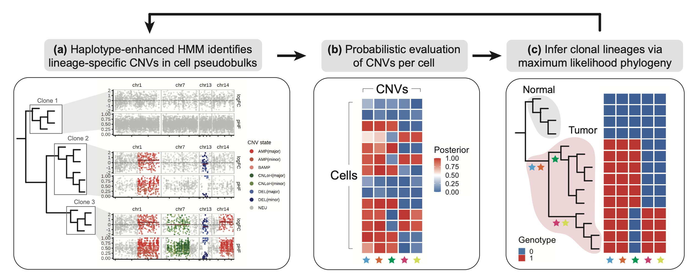

Lexanomics Blog
Categories
All
(32)
awesome science
(19)
bioinfo-trends
(4)
bioinformatics
(1)
debbuging new
(8)
evolution
(1)
lncRNA
(1)
sequencing-technologies
(4)
The gut microbiome influences microglial populations
awesome science
The relationship between the gut microbiome and the neural function and behavior has been widely explored in the past years, specially after the development of metagenomics…
Aug 8, 2024
Lexanomics
Using mitochondrial genetics to improve clonal tracing with single-cell mtDNA data
awesome science
Mitochondrial DNA (mtDNA) is highly useful for clonal tracing, which tracks the lineage and growth of cells within an organism. Due to its high mutation rate and unique…
Aug 1, 2024
Diego M. Coelho
Using 16S rDNA and metagenomic sequencing technology to analyze the fecal microbiome of children with avoidant/restrictive food intake disorder
awesome science
The gut microbiome, an essential component for maintaining overall health, is shaped by various factors including genetics, diet, and lifestyle. While substantial research…
Jul 18, 2024
Diego Teixeira
Human microbiome alterations during spaceflight
awesome science
Spaceflight missions have contributed to the advancement of a plentitude of areas, however, little is known about how the human body and its associated microbiome respond to…
Jul 11, 2024
Lexanomics
Phylogenomics and the rise of the angiosperms
awesome science
Angiosperms, or flowering plants, represent one of the most diverse and ecologically dominant groups of plants on Earth. Check out what a high resolution phylogenetic tree…
Jun 13, 2024
Diego Teixeira
Convert database identifiers with
biomaRt
R package
debbuging new
BioMart is an integral part of the Ensembl project, and it was designed to facilitate the access and retrieval of biological data. With BioMart, users can easily extract…
Jun 13, 2024
Lexanomics
Yet another tip for speeding up DEG analysis on Seurat
debbuging new
Not long ago, we discussed ways to speed up differential expression analysis in single-cell datasets.
May 28, 2024
Lexanomics

Are a good or a bad guy? Identifying malignant cells using Numbat
debbuging new
Distinguishing malignant cells in a single-cell project can be a very time-consuming task. Particularly, malignant cells are heterogeneous and often display misleading…
May 28, 2024
Lexanomics
A link between the brain and the immune system
awesome science
The brain and the immune system are intricately connected, with recent research uncovering many pathways through which they interact. For example, The blood-brain barrier…
May 23, 2024
Iara Souza
gnomAD: 1,000,000 individuals variation reference
awesome science
From time to time, large consortiums release valuable datasets to the public. gnomAD is one such example. Following the release of gnomAD’s exome and genome data, a new…
May 21, 2024
Diego M. Coelho
How non-coding variants can explain developmental disorders
awesome science
Coding variants, especially single-nucleotide variants, are genetic alterations occurring within the coding region of the genes. They are widely studied in human genomics…
May 16, 2024
Iara Souza
Comparison of Metagenomics and Metatranscriptomics Tools: A Guide to Making the Right Choice
awesome science
Bioinformatics is an area where new analytical methods, tools, and pipelines are constantly emerging. Therefore, knowing which tools are most appropriate for your data is…
May 14, 2024
Diego Teixeira
Improving single-cell projects: Generative models for data imputation
awesome science
In the previous post, we mentioned how deep-learning and generative approaches are revolutionizing genomics and single-cell studies.
May 9, 2024
scGPT: A foundation model for single-cell genomics that got it! (The Right Stuff).
awesome science
Generative pre-trained models are the new cool kid on the block üòé that no one can ignore anymore. Usage of this new approach have tremendous impact in a broad amount of‚Ķ
May 7, 2024
Diego Coelho
Gut microbiome composition: link between sports performance and protein absorption?
awesome science
Proteins are the building blocks of nutrition, indispensable for bone and muscle metabolism. Adequate intake not only maintains health but also bolsters sports performance.…
May 2, 2024
Diego Teixeira
Population genetics meets immunotherapy
awesome science
Arguably, the immune system displays one of the highest complexities of any biological process in evolution. In humans, its ability to respond to pathogens spans multiple…
Apr 25, 2024
Lexanomics
An automatic and biological-driven approach for defining “roots” on Monocle3
debbuging new
There are many reasons why a researcher wants to perform pseudotime analysis on single-cell datasets, including but not limited to cellular differentiation, developmental…
Apr 18, 2024
Lexanomics
How much does it cost a Bioinformatician? - Asking ChatGPT
bioinformatics
Some time ago, I became curious about the gross salary range for bioinformaticians across various countries in Europe and North America. While browsing through platforms…
Apr 18, 2024
Diego M. Coelho
Clinical application of bronchoalveolar lavage fluid metagenomics next-generation sequencing in cancer patients with severe pneumonia
awesome science
Severe pneumonia presents a significant challenge for cancer patients, often complicating timely and accurate diagnosis of underlying pathogens. Conventional diagnostic…
Apr 11, 2024
Diego Teixeira
Creating a PPI network from a list of differentially expressed genes
debbuging new
Suppose that we have a set of differentially expressed genes (DEG) from RNA-Seq data and their corresponding log2FoldChanges. Let’s create a protein-protein interaction…
Apr 9, 2024
Iara Souza
Basic taxonomic classification of long and short reads with Kraken2
debbuging new
The taxonomic classification of reads from sequencing experiments has become a common task for most computational biology and bioinformatics projects. To facilitate this…
Apr 4, 2024
Diego Gomes
Redefining the treponemal history through pre-Columbian genomes from Brazil
awesome science
It’s no secret that human migration dynamics are one of the primary factors responsible for the introduction of infectious agents to different parts of the planet.…
Apr 2, 2024
Diego Gomes
Parallelization tips on Seurat
debbuging new
For the series on basic, but useful tips on single-cell analysis. We want to introduce parallelization using
future
for Seurat.
Mar 28, 2024
Lexanomics
Cholesin: a new hormone discovered for controlling cholesterol levels in humans
awesome science
Energy metabolism is one of the most fascinating and complex subjects in human metabolism. For example, cholesterol metabolism involves many different hormones and has a…
Mar 26, 2024
Iara Souza
The butterfly effect: lncRNAs in the evolutionists’ sights
awesome science
evolution
lncRNA
Flying insects have been starring the study of evolution. The story of how moths with darker color increased frequency in contrast to light color moths in the highly…
Mar 19, 2024
Iara Souza
Data interoperability for single-cell analysis
debbuging new
Seurat is undoubtedly the most used package for single-cell analysis. However, the single-cell field has changed towards new programming languages and packages (e.g.…
Mar 14, 2024
Lexanomics
Unveiling the Beginning of the Pandemic: The Transformative Role of Meta-Transcriptomics in Pathogen Identification
awesome science
The year 2020 will forever be remembered as the starting point of the COVID-19 pandemic, declared by the World Health Organization. A revolution in the speed of information…
Mar 12, 2024
Diego Teixeira
Why to sequence the DNA?
bioinfo-trends
sequencing-technologies
There are many different DNA sequencing technologies, all of them with their potentialities. However, do you know some of the main use cases for DNA sequencing?
Mar 8, 2024
Iara Souza
Jumping genetic element getting in the way of primates tail evolution
awesome science
It is of common knowledge that humans and monkeys share great similarities regarding their genomes. And, if most monkeys have tails, what happend to ours? This is the…
Mar 3, 2024
Iara Souza
Analysing the cell transcriptional profile at the single-cell resolution
bioinfo-trends
sequencing-technologies
Single-cell RNA-seq analysis is a powerful technique used in biology and medicine to study the gene expression of individual cells within a population. Single-cell gene…
Feb 29, 2024
Iara Souza
A new look into microorganisms by the lens of metagenomics
bioinfo-trends
sequencing-technologies
Have you ever heard that a great percentage of our body composition comes from the microorganisms living with us? Recent research suggests a 1:1 ratio for the number of…
Feb 28, 2024
Iara Souza
Are you aware about RNA sequencing analysis?
bioinfo-trends
sequencing-technologies
Sequencing technologies have revolutionized our understanding of human and other organisms’ biology. By having access to the transcriptome, one can have insights about the…
Feb 27, 2024
Iara Souza
No matching items